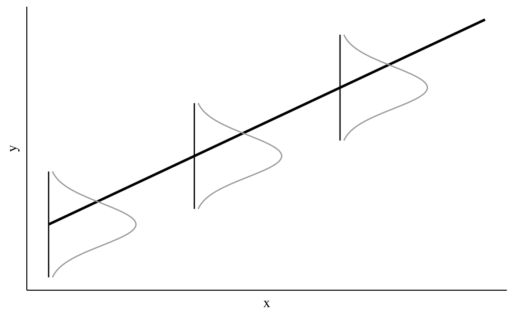

25 Introduzione
Lo scopo della ricerca è trovare le associazioni tra le variabili e fare confronti fra le condizioni sperimentali. Nel caso della psicologia, il ricercatore vuole scoprire le leggi generali che descrivono le relazioni tra i costrutti psicologici e le relazioni che intercorrono tra i fenomeni psicologici e quelli non psicologici (sociali, economici, storici, …). Abbiamo già visto come la correlazione di Pearson sia uno strumento adatto a questo scopo. Infatti, essa ci informa sulla direzione e sull’intensità della relazione lineare tra due variabili. Tuttavia, la correlazione non è sufficiente, in quanto il ricercatore ha a disposizione solo i dati di un campione, mentre vorrebbe descrivere la relazione tra le variabili nella popolazione. A causa della variabilità campionaria, le proprietà dei campioni sono necessariamente diverse da quelle della popolazione: ciò che si può osservare nella popolazione potrebbe non emergere nel campione e, al contrario, il campione manifesta caratteristiche che non sono necessariamente presenti nella popolazione. È dunque necessario chiarire, dal punto di vista statistico, il legame che intercorre tra le proprietà del campione e le proprietà della popolazione da cui esso è stato estratto. Il modello lineare utilizza la funzione matematica più semplice per descrivere la relazione fra due variabili, ovvero la funzione lineare. In questo Capitolo vedremo come si possa fare inferenza sulla relazione tra due variabili mediante il modello lineare bayesiano. Inizieremo a descrivere le proprietà geometriche della funzione lineare per poi utilizzare questa semplice funzione per costruire un modello statistico secondo un approccio bayesiano.
25.1 La funzione lineare
Iniziamo con un ripasso sulla funzione di lineare. Si chiama funzione lineare una funzione del tipo
\[\begin{equation} f(x) = a + b x, \end{equation}\]dove \(a\) e \(b\) sono delle costanti. Il grafico di tale funzione è una retta di cui il parametro \(b\) è detto coefficiente angolare e il parametro \(a\) è detto intercetta con l’asse delle \(y\) [infatti, la retta interseca l’asse \(y\) nel punto \((0,a)\), se \(b \neq 0\)].
Per assegnare un’interpretazione geometrica alle costanti \(a\) e \(b\) si consideri la funzione
\[\begin{equation} y = b x. \end{equation}\]Tale funzione rappresenta un caso particolare, ovvero quello della proporzionalità diretta tra \(x\) e \(y\). Il caso generale della linearità
\[\begin{equation} y = a + b x \end{equation}\]non fa altro che sommare una costante \(a\) a ciascuno dei valori \(y = b x\). Nella funzione lineare \(y = a + b x\), se \(b\) è positivo allora \(y\) aumenta al crescere di \(x\); se \(b\) è negativo allora \(y\) diminuisce al crescere di \(x\); se \(b=0\) la retta è orizzontale, ovvero \(y\) non muta al variare di \(x\).
Consideriamo ora il coefficiente \(b\). Si consideri un punto \(x_0\) e un incremento arbitrario \(\varepsilon\) come indicato nella figura @ref(fig:linearfunction). Le differenze \(\Delta x = (x_0 + \varepsilon) - x_0\) e \(\Delta y = f(x_0 + \varepsilon) - f(x_0)\) sono detti incrementi di \(x\) e \(y\). Il coefficiente angolare \(b\) è uguale al rapporto
\[\begin{equation} b = \frac{\Delta y}{\Delta x} = \frac{f(x_0 + \varepsilon) - f(x_0)}{(x_0 + \varepsilon) - x_0}, \end{equation}\]indipendentemente dalla grandezza degli incrementi \(\Delta x\) e \(\Delta y\). Il modo più semplice per assegnare un’interpretazione geometrica al coefficiente angolare (o pendenza) della retta è dunque quello di porre \(\Delta x = 1\). In tali circostanze infatti \(b = \Delta y\).

25.2 Una media per ciascuna osservazione
In precedenza abbiamo visto come sia possibile stimare i parametri di un modello bayesiano nel quale le osservazioni sono indipendenti e identicamente distribuite secondo una densità gaussiana,
\[\begin{equation} Y_i \stackrel{i.i.d.}{\sim} \mathcal{N}(\mu, \sigma), \quad i = 1, \dots, n. (\#eq:normalsamplingmodel) \end{equation}\]Il modello @ref(eq:normalsamplingmodel) assume che ogni \(Y_i\) sia la realizzazione di una v.c. descritta da una \(\mathcal{N}(\mu, \sigma^2)\). Da un punto di vista bayesiano,questo modello può essere implementato assegnando le distribuzioni a priori ai parametri \(\mu\) e \(\sigma\) e generando la verosimiglianza in base ai dati osservati. Con queste informazioni, possono poi essere definite le distribuzioni a posteriori dei parametri (Gelman et al., 2020):
\[\begin{align} Y_i \mid \mu, \sigma & \stackrel{iid}{\sim} \mathcal{N}(\mu, \sigma^2)\notag\\ \mu & \sim \mathcal{N}(\mu_0, \tau^2) \notag\\ \sigma & \sim \mbox{Cauchy}(x_0, \gamma) \notag \end{align}\]25.3 Relazione lineare tra la media \(y \mid x\) e il predittore
È però comune che vengano registrate altre variabili che possono essere associate alla risposta di interesse \(y_i\). Chiamiamo \(x\) una di tali variabili. La variabile \(x\) viene chiamata predittore (o variabile indipendente) in quanto il ricercatore è tipicamente interessato a predire \(y_i\) a partire dal valore assunto da \(x_i\). Come si può estende il modello @ref(eq:normalsamplingmodel) descritto in precedenza per lo studio della relazione tra \(y_i\) e \(x_i\)?
Il modello @ref(eq:normalsamplingmodel) assume una media \(\mu\) comune per ciascuna osservazione \(Y_i\). Dal momento che desideriamo introdurre una nuova variabile \(x_i\) che assume un diverso valore per ciascuna osservazione \(y_i\), il modello @ref(eq:normalsamplingmodel) può essere modificato in modo che la media comune \(\mu\) venga sostituita da una media \(\mu_i\) specifica a ciascuna osservazione \(i\)-esima:
\[\begin{equation} Y_i \mid \mu_i, \sigma \stackrel{ind}{\sim} \mathcal{N}(\mu_i, \sigma), \quad i = 1, \dots, n. (\#eq:normalsamplinglinearmodel) \end{equation}\]Si noti che le osservazioni \(Y_1, \dots, Y_n\) non sono più identicamente distribuite poiché hanno medie diverse, ma sono ancora indipendenti come indicato dalla notazione ind posta sopra il simbolo \(\sim\) nella @ref(eq:normalsamplinglinearmodel).
L’approccio che consente di mettere in relazione un predittore \(x_i\) con la risposta \(Y_i\) è quello di assumere che la media di ciascuna \(Y_i\), ovvero \(\mu_i\), sia una funzione lineare del predittore \(x_i\). Una tale relazione lineare è scritta come
\[\begin{equation} \mu_i = \beta_0 + \beta_ 1 x_i, \quad i = 1, \dots, n. (\#eq:regmodel) \end{equation}\]Nella @ref(eq:regmodel), ciascuna \(x_i\) è una costante nota (ecco perché viene usata una lettera minuscola per la \(x\)) e \(\beta_0\) e \(\beta_ 1\) sono parametri incogniti. Questi parametri rappresentano l’intercetta e la pendenza della retta di regressione e sono delle variabili casuali.1 L’inferenza bayesiana procede assegnando una distribuzione a priori a \(\beta_0\) e a \(\beta_ 1\) e si esegue l’inferenza riassumendo la distribuzione a posteriori di questi parametri.
Nel modello @ref(eq:regmodel), la funzione lineare \(\beta_0 + \beta_ 1 x_i\) è interpretata come il valore atteso della \(Y_i\) per ciascun valore \(x_i\), mentre l’intercetta \(\beta_0\) rappresenta il valore atteso della \(Y_i\) quando \(x_i = 0\). Il parametro \(\beta_ 1\) (pendenza) rappresenta invece l’aumento medio della \(Y_i\) quando \(x_i\) aumenta di un’unità. È importante notare che la relazione lineare @ref(eq:normalsamplinglinearmodel) di parametri \(\beta_0\) e \(\beta_ 1\) descrive l’associazione tra la media \(\mu_i\) e il predittore \(x_i\). In altri termini, tale relazione lineare ci fornisce una predizione sul valore medio \(\mu_i\), non sul valore effettivo \(Y_i\).
25.4 Il modello lineare
Sostituendo la @ref(eq:regmodel) nella @ref(eq:normalsamplinglinearmodel) otteniamo il modello lineare:
\[\begin{equation} Y_i \mid \beta_0, \beta_ 1, \sigma \stackrel{ind}{\sim} \mathcal{N}(\beta_0 + \beta_ 1 x_i, \sigma), \quad i = 1, \dots, n. (\#eq:samplinglinearmodel) \end{equation}\]Questo è dunque un caso speciale del modello di campionamento Normale, dove le \(Y_i\) seguono indipendentemente una densità Normale con una media (\(\beta_0 + \beta_ 1 x_i\)) specifica per ciascuna osservazione e con una deviazione standard (\(\sigma\)) comune a tutte le osservazioni. Poiché include un solo predittore (\(x\)), questo modello è chiamato modello di regressione lineare bivariata.
Il modello statistico di regressione lineare bivariata può essere rappresentato in forma geometrica come indicato di seguito. La figura illustra che, in tale modello statistico, la variabile \(X\) è fissa per disegno – in altre parole, i valori \(x\) restano immutati tra campioni diversi. Potendo ipotizzare infiniti campioni tutti con gli stessi valori \(x\), in corrispondenza di ciascun valore \(x_i\) vi sarà una distribuzione di valori \(y\). La figura illustra il caso di tre valori \(x\). A ciascun valore \(x_i\), con \(i = 1, 2, 3\) per l’esempio della figura, corrisponde una distribuzione di valori \(y\) condizionati a \(x_i\), \(p(y \mid x_i)\).

Il modello statistico di regressione lineare assume che le distribuzioni condizionate \(p(y \mid x_i)\) siano
\[ y_i \sim \mathcal{N}(\mu_i, \sigma), \]
(assunzione di normalità), laddove
\[ \mu_i = \mathbb{E}(y \mid x_i) = \alpha + \beta x_i. \]
L’equazione precedente descrive l’assunzione di linearità.
Si noti che il parametro \(\sigma\) non ha un pedice: questo significa che il modello ipotizza una dispersione costante delle distribuzioni \(p(y \mid x_i), \forall i\). Tale assunzione va sotto il nome di omoschedasticità.
Se questa è la struttura della popolazione, possiamo pensare ad un campione casuale di ampiezza \(n\) come ad una serie di coppie \(x_i, y_i\), con \(i = 1, \dots, n\), nelle quali i valori \(x\) sono fissi per disegno e ciascun valore \(y_i\) è una realizzazione della variabile casuale \(Y = y_i \mid X = x_i\). Questa è l’ultima assunzione del modello statistico lineare: l’indipendenza. In maniera equivalente possiamo dire che gli errori \(\varepsilon_i = y_i - \hat{y}_i = y_i - (\beta_0 + \beta_1 x_i)\) sono variabili casuali distribuite secondo la legge Normale di parametri \(\mathcal{N}(0, \sigma)\).
Commenti e considerazioni finali
Il modello lineare semplice viene usato per descrivere la relazione tra due variabili e per determinare il segno e l’intensità di tale relazione. Inoltre, il modello lineare ci consente di prevedere il valore della variabile dipendente in base al valore assunto dalla variabile indipendente.
Una notazione alternativa per tali parametri è \(\alpha\), \(\beta\), anziché \(\beta_0\), \(\beta_ 1\).↩︎